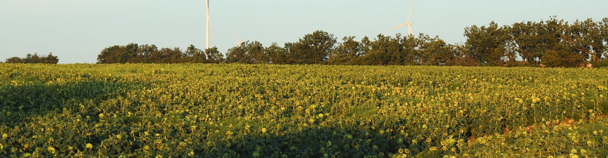
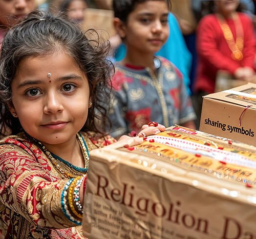
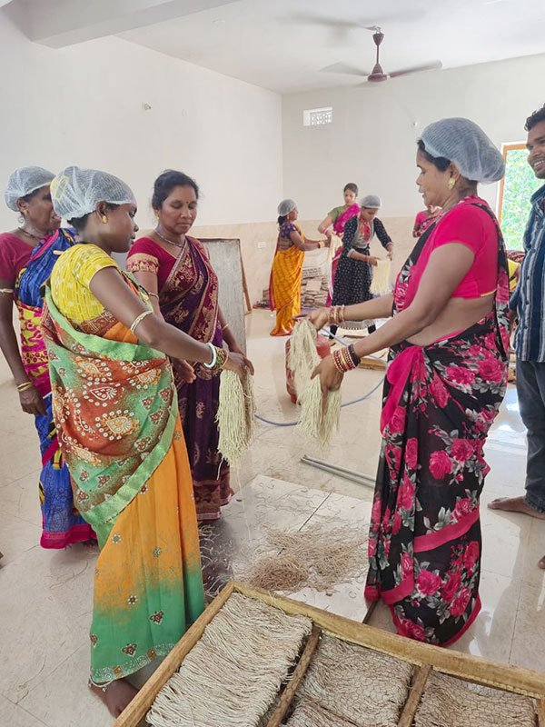
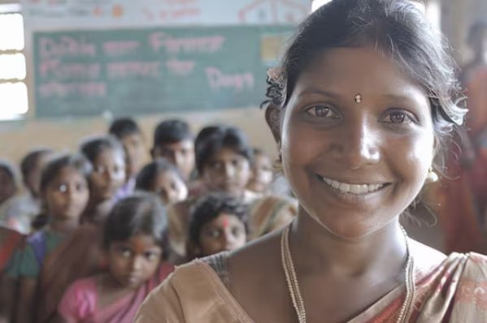
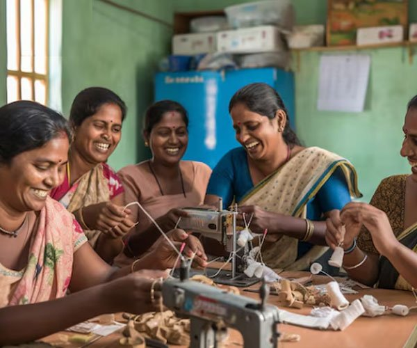
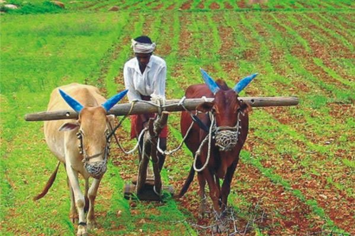
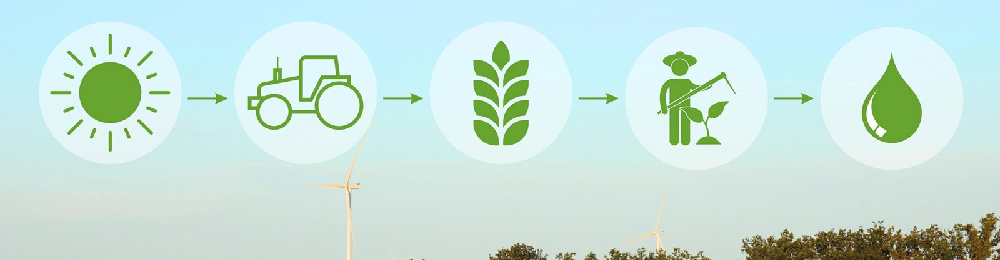
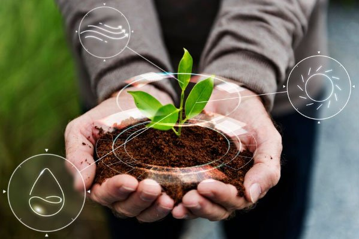

01 / AGRICULTURE
Sustainable Agriculture & Horticulture
Promoting climate-smart farming, organic soil management, crop diversification, and Farmer Producer Organization (FPO) capacity building.
PRDF is a research-grounded development foundation advancing sustainable agriculture, women empowerment, climate action, and grassroots innovation across India.

Sustainable agriculture, horticulture & community empowerment
Patra Research and Development Foundation (PRDF) is a Section 8 non-profit organization dedicated to advancing sustainable development through research, innovation, and community-driven action.
We work to bridge the gap between scientific knowledge, traditional wisdom, and practical solutions that improve the lives of rural and tribal communities. Rather than applying one-size-fits-all models, we conduct research, assess local needs, build partnerships, and implement evidence-based programs that are practical, scalable, and environmentally sustainable.
Designing interventions together with the farmers, women, and collectives we serve.
Grounding field practices in scientific agronomy, pilot trials, and proven ecological data.


PRDF works across eight interconnected domains to foster holistic rural transformation, ecological resilience, and equitable community growth.
Promoting climate-smart farming, organic soil management, crop diversification, and Farmer Producer Organization (FPO) capacity building.
Supporting Self-Help Groups (SHGs) and women entrepreneurs through training, financial literacy, micro-enterprise, and collective market linkages.
Creating sustainable income streams through non-timber forest produce, agro-processing, rural crafts, and structured value addition.
Grassroots health awareness, nutri-gardens, maternal and child wellness, clean drinking water access, and preventive healthcare drives.
Action research, participatory trials, low-cost rural technology demonstration, and knowledge dissemination bridging science and practice.
Conserving ecosystems through carbon action, biodiversity protection, community water management, and renewable natural resource stewardship.
Vocational certification, agro-machinery repair, digital literacy, agribusiness skills, and youth entrepreneurship training.
Rural foundational learning, digital literacy workshops, STEM curiosity initiatives, and educational equity in remote habitations.
PRDF designs every intervention around verifiable social, ecological, and economic indicators.
Rural and tribal village habitations engaged through participatory planning and action.
Target IndicatorSmallholder farming and non-timber forest produce households with diversified income.
Target IndicatorSHG members mobilized into productive micro-enterprises and governance leadership.
Target IndicatorYouth, women, and progressive farmers certified in vocational and agribusiness skills.
Target IndicatorExplore the ten active initiatives through which PRDF operationalizes its mission in rural livelihoods, agriculture, and skill development.
At the heart of PRDF are the farmers cultivating regenerative fields, the women leading grassroots enterprise collectives, the youth learning technical skills, and the village elders preserving indigenous agro-ecological wisdom.
By anchoring every initiative in community institutions—from Farmer Producer Organizations to Self-Help Groups—we foster self-reliance, social dignity, and sustained economic growth.
"Meaningful development begins with listening to rural communities and building scalable solutions side by side."PRDF Community Engagement Philosophy



Rural development requires rigorous scientific grounding. PRDF bridges academic research and grassroots realities to develop field-tested innovations that enhance productivity, conserve resources, and empower smallholders.
Testing climate-resilient crop varieties, bio-inputs, and micro-irrigation systems under real farmer field conditions.
Adapting low-cost mechanical tools and agro-processing equipment suited to small and marginal farm scales.
Documenting traditional knowledge, medicinal botanical varieties, and local climate adaptation techniques.

From community-managed watershed revival and soil organic carbon enhancement to biodiversity conservation and solar agro-processing, PRDF partners with rural communities to safeguard local ecosystems while securing resilient livelihoods.
We believe sustainable transformation is achieved through collaborative alliances across government departments, CSR foundations, and research institutions.
Convergence with state development missions, agriculture directorates, and rural development programs to scale proven grassroots models.
Strategic partnerships with corporate foundations committed to high-impact rural livelihoods, women entrepreneurship, and ecological action.
Collaborations with agricultural universities, scientific research councils, and knowledge hubs to ensure evidence-based implementation.
Verified dispatches detailing recent milestones, farmer training sessions, and community initiatives across our operational districts.

Hands-on training sessions introducing zero-tillage, bio-fertilizer preparation, and organic soil amendments to smallholder farmer clusters.
Supporting women-led Self-Help Groups in post-harvest processing, hygienic packaging, and direct market negotiations.
Establishing village-level processing facilities to enhance producer profit margins and strengthen community nutritional security.
PRDF is led by experienced professionals spanning agronomy, horticulture, rural economics, and community institution building.
"Meaningful development begins with connecting research, innovation, and grassroots action to create scalable, long-lasting solutions for India’s rural communities."
With a strong academic foundation in horticulture and agriculture, the leadership of PRDF brings extensive hands-on experience in sustainable agronomy, Farmer Producer Organizations (FPOs), value chain development, climate-smart farming, market linkages, and community institution building across Odisha.
Whether you are a CSR leader, an academic institution, a philanthropic organization, or an individual passionate about rural India, there are multiple avenues to collaborate with PRDF.
Deploy strategic capital into auditable, high-impact rural development and women empowerment programs.
Joint field studies, agricultural technology pilots, and action research validation.
Engage directly in grassroots community centers, skills training, and agricultural schools.